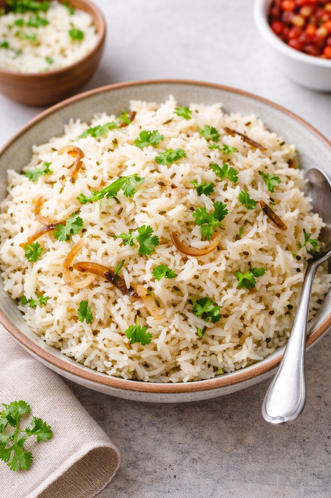

Ingredients :
- 1 cup cooked rice
- tbsp oil or ghee
- tsp cumin seeds (jeera)
- 1 small onion (sliced)
- 1 green chilli (optional)
- Salt
- Coriander leaves
Preparation time : 10 min
Process :
- Heat oil/ghee in a pan.
- Add cumin seeds; let them crackle.
- onion & chilli, sauté till light brown.
- Add cooked rice and salt.
- Mix gently and cook for 2 minutes.
- Garnish with coriander.